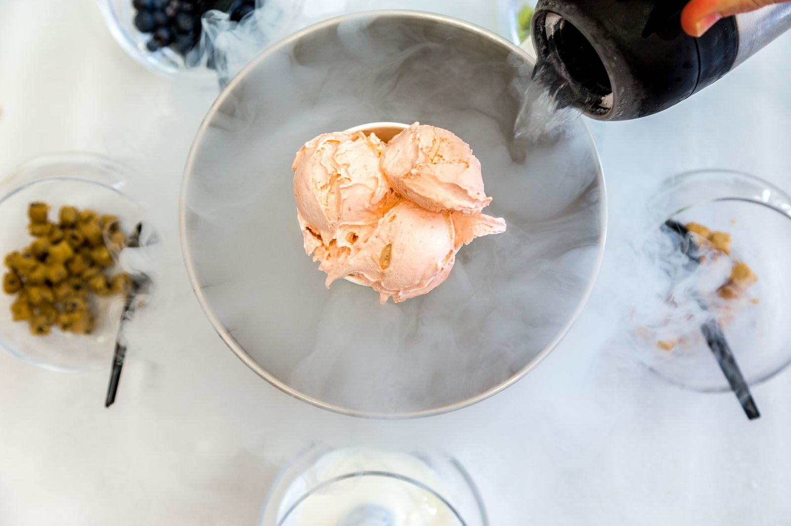

54–65 °C
Sous vide hold
Chef's-table evenings · Event stations · Menu R&D · Masterclasses
I am Nadia Ferro, a molecular gastronomy chef in Valencia. My kitchen works at both ends of the thermometer — liquid nitrogen at −196 °C, a pan at 230 °C — and treats every degree between as something to be measured, logged and explained. The vapour is a by-product. The temperature is the work.

Signature — The Temperature Log
Pick a process. Its entry gives the working band, what physically happens inside it, the rule that governs it, and what it is booked as. The same bands are printed in the reference table underneath — in this kitchen, the log and the table are not allowed to disagree.
| PROCESS | WORKING BAND | WHAT IT IS FOR | THE GOVERNING RULE |
|---|---|---|---|
| Liquid nitrogen freeze | −196 °C | Frozen courses, instant chilling | Boil-off complete before anything is served; never sealed |
| Dry ice chill & vapour | −78.5 °C | Holding pieces cold; chilled service | Never loose in food or drink; ventilate the room |
| Blast chill | +70 °C → +3 °C in ≤90 min | Cooked food made safe, kept honest | Probe the core of the thickest part; log every batch |
| Sous vide hold | 54–65 °C | Even cooking of proteins | Time at temperature, per the printed tables — never temperature alone |
| Sear & char | 150–230 °C pan surface | Browning a bath cannot give | Dry surface, heavy pan, seconds counted |
Worksheet — Nitrogen, Worked Out
Clients ask, and guessing wastes their money and my dewar. This is the estimate the studio works from — every assumption printed, the arithmetic in the open. It is an estimate, not a measurement: a real mix, bowl and pour move the figure by a fifth either way.
Quoting rule: nitrogen and dry ice are billed to clients at cost, against the supplier's invoice. The worksheet decides how much to order — never what to mark up.
Services & Prices
Six lines of work, each with its temperature class, its format and its honest status. Fees are printed in full underneath — the shape of the price before anyone writes an email.
| RATE CARD | BASIS | FROM |
|---|---|---|
| Chef's-table evening | Per evening · 10 guests · 7 courses | €1,850 |
| Event station | Per event · up to 60 guests · 3 h | €1,200 |
| Menu R&D | Per day · minimum 4 days | €650 |
| Technique masterclass | Per day · up to 8 cooks | €980 |
| Process & safety audit | Fixed · written protocol included | €540 |
“Sixty guests, three hours, and the queue never passed a minute. Our insurer read her protocol before the event and sent it back with one word on it: fine.”